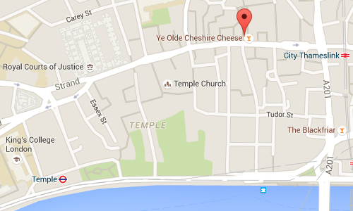
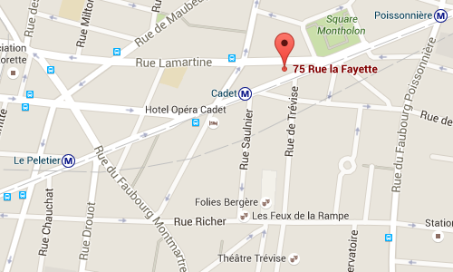

Mon cabinet est à Londres
7 Hind Court, 147 Fleet Street,London EC4A 2BU, UK
DX: 37952 London/Kingsway
Tel: +44 20 7936 4445Fax: +44 20 7583 8586Mob: +44 7515 472 944

Je consulte aussi à Paris
75 rue la Fayette,75009 ParisFrance
